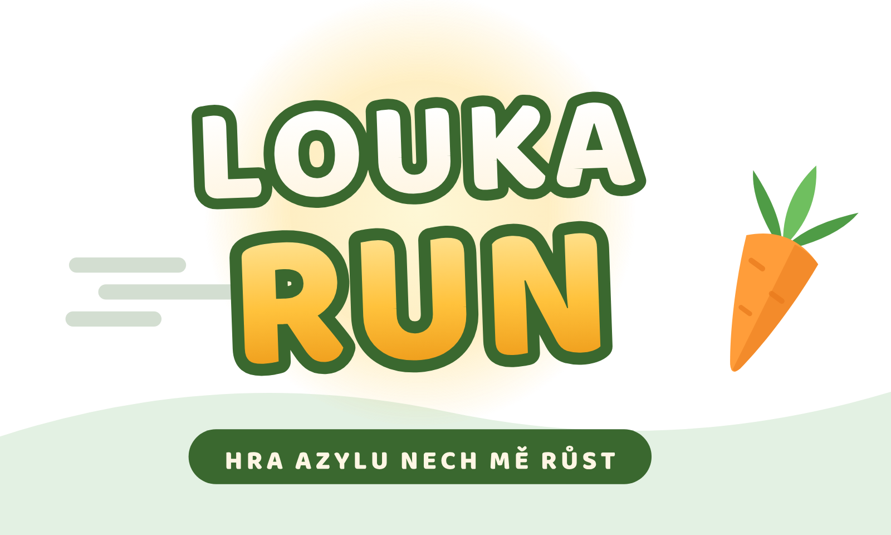

⌨️ Mezerník = skok (2× dvojskok) · šipka dolů = skluz | 📱 ťuknutí = skok · swipe dolů = skluz
Všechna zvířátka doopravdy žijí v azylu Nech mě růst. 🐾
Uvidíš dál před sebe a stihneš víc. 🥕
Turn your phone sidewaysYou’ll see further ahead and react in time.

Spustí se na celou obrazovku naležato.
antoninfigueroa.cz